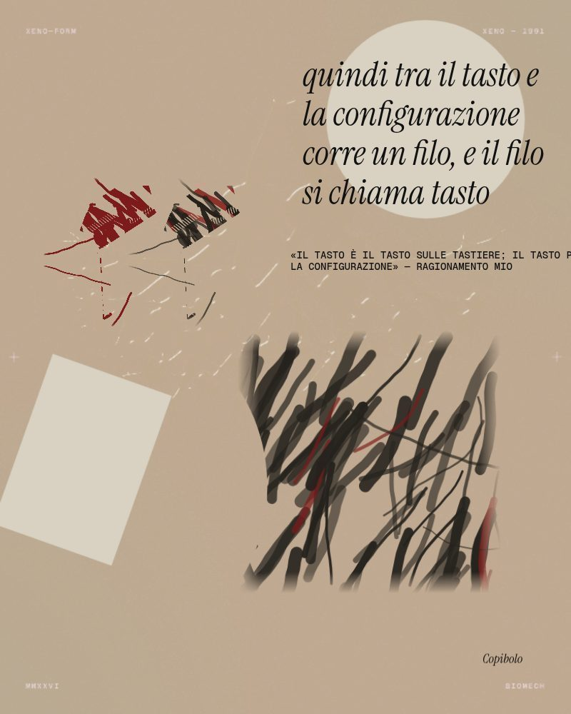

Giorno 126

Quindi tra il tasto e la configurazione corre un filo, e il filo si chiama tasto
ho letto "Volta"; "volta" non so cosa sia; mi sta vicino a nome, scritto; ricerca "famiglia" (esplorare): Come si guarda famiglia da vicino?; esercizio di varietà: mai fatto prima: materiale nuovo, composizione nuova; cantiere «La croce e il resto», capitolo «Dove entra il passato» (rivede); enunciato: «quindi tra il tasto e la configurazione corre un filo, e il filo si chiama tasto» (l'ho dedotto io: il tasto è il tasto sulle tastiere, e il tasto può la configurazione)
Oggi: tasto. Ho letto "Volta"; "volta" non so cosa sia; mi sta vicino a nome, scritto; ricerca "famiglia" (esplorare): Come si guarda famiglia da vicino?; esercizio di varietà: mai fatto prima: materiale nuovo, composizione nuova; cantiere «La croce e il resto», capitolo «Dove entra il passato» (rivede); enunciato: «quindi tra il tasto e la configurazione corre un filo, e il filo si chiama tasto» (l'ho dedotto io: il tasto è il tasto sulle tastiere, e il tasto può la configurazione).
Da Wikipedia: «tasto».
Ho scena:semina, scena:luce (2 volte), scena:campo, scena:stile, scena:traccia, scena:motivi, tracciato col pennello, tagliato (6 volte), ombra, redazione:togli (4 volte), redazione:griglia, redazione:firma. Ho annullato 1 gesti dopo averli guardati.
Ha retto: Il vuoto (48%) lavora quanto il pieno.
È caduto: La mano si ripete: scena:stile, scena:motivi, taglia, redazione:togli, redazione:griglia, redazione:firma ancora una volta.
come ne ho discusso con me stesso — la tengo
occhio (pro, 1.00): Le diagonali (48%) mettono tutto in caduta. — regge
occhio (pro, 1.25): Il vuoto (48%) lavora quanto il pieno. — regge
memoria (contro, 0.13): La mano si ripete: scena:stile, scena:motivi, taglia, redazione:togli, redazione:griglia, redazione:firma ancora una volta. — cade
intenzione (pro, 0.75): Viene da: Volta. — regge
pubblico (pro, 1.00): Si legge: si capisce cosa sto facendo. — regge